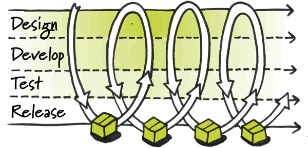
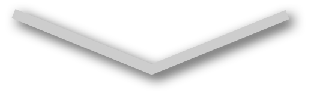
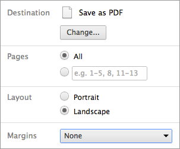

Working with Third-party Web Agencies
By: Kyle Nolan Stone
Created with reveal.js / an HTML presentation toolkit by @hakimel
How Does This Thing Work?
Navigate the slides with → and ↓.
Esc zooms to a bird's eye view.
Let's Begin with a Quote
“No developer wants to be spinning their wheels, or operating on mundane tasks when they could instead be creating rich and compelling experiences.
Smart developers work with smart tools, effective workflows, and wise strategies for development.”
~ Paul Irish, JavaScript Authoring Tooling
Challenging problems for an operations team
- Live and die by the clock
- Long-term planning is difficult to keep on schedule
- Clients want it DONE -- today, not tomorrow
Smart Code Sharing with GitHub
GitHub enables multiple teams to share code changes in real time.
We Used Built-in Features
- Revert specific files or an entire project to a previous state
- Review changes made over time
- See who last modified something that caused a problem
- Branch off a project and update two branches in unison
And We Added Our Own
- Developer start-up kit to help build and test deep-dives
- Example code for Twitter, Facebook, G+ and Pinterest integration
- Local Environment setup guide to help developers work with the Samsung.com environment on their local machines
Continuous Integration Server on Rackspace
Continuous Integration (CI) is a development concept whereby developers integrate code into a shared repository multiple times per day.
By integrating regularly, you can detect errors quickly, and locate them more easily.
Because you’re integrating so frequently, there is significantly less back-tracking to discover where things went wrong, so you can spend more time building features.


The continuous integration server uses HTTP proxies to replicate the Samsung.com front-end environment. It is a powerful tool for developing and testing interactive deep-dive projects.
We Combined the Tools Together...
+
Benefits
- For Agencies:
- Removes uncertainty about how a project will behave once it’s staged
- Spend less time debugging and more time adding features
- Identify and resolve issues faster before they reach production
- Increased visibility into the current state of a project
- Improves communication between multiple stakeholders working on a project
- Confidence your project is built on a solid foundation
- Easier to make incremental improvements on a project, branch off a B2B version, or re-use your project’s look and feel somewhere else
For our Clients:
Part Two
The Workflow of a Modern Operations Team
How We Launch Projects
- Third-party agency checks their latest project files into GitHub.
- The staging branch of the repository is automatically deployed on The Barbarian Group's servers.
- Partner agency accesses the staged version of their project for quality assurance checks, client review, and further development.
- Example: 2013 Home Appliances Landing Page
- When final code is ready to launch, The Barbarian Group migrates code to the master branch and pushes to client's server.
- Code is spot-checked and pushed to production.
Background Transition Override
You can override background transitions per slide by using data-background-transition="slide".
Fragmented Views
Hit the next arrow...
... to step through ...
any type- of view
- fragments
Fragment Styles
There's a few styles of fragments, like:
grow
shrink
roll-in
fade-out
highlight-red
highlight-green
highlight-blue
Take this presentation with you?
Export it to a PDF:
